🧭 1. Tổng quan điểm đến
Khác biệt hoàn toàn với bất kỳ đô thị nào của Việt Nam, Huế được quy hoạch như một "bài thơ kiến trúc đô thị tuyệt tác". Kinh thành Huế, Hoàng thành và Tử Cấm Thành được xây dựng hài hòa tuyệt đối giữa thiên nhiên sông nước và cây cỏ, lấy dòng sông Hương xanh ngắt làm trục chính và ngọn núi Ngự Bình làm bình phong che chắn. Từng mái đình, bờ thành, cổng đá rêu phong đều ẩn chứa chiều sâu văn hóa và hồn cốt dân tộc.
Huế vinh dự là địa phương đầu tiên của Việt Nam sở hữu Di sản Văn hóa Thế giới được UNESCO công nhận vào năm 1993. Cho đến nay, Cố đô Huế tự hào là vùng đất sở hữu tới 5 danh hiệu Di sản Thế giới thuộc các hệ thống di sản vật thể, phi vật thể và di sản tư liệu Ký ức thế giới, khẳng định vị thế trung tâm văn hóa - du lịch đặc sắc hàng đầu cả nước và khu vực.
📜 2. Vị trí địa lý & Dấu ấn lịch sử
Tỉnh Thừa Thiên Huế nằm ở dải đất miền Trung hẹp và dài, trải từ tọa độ 15°59' đến 16°48' vĩ độ Bắc và 107°00' đến 108°12' kinh độ Đông. Phía bắc giáp tỉnh Quảng Trị, phía nam giáp thành phố Đà Nẵng và tỉnh Quảng Nam, phía tây tựa lưng vào dãy Trường Sơn hùng vĩ giáp nước bạn Lào, và phía đông mở ra bờ biển dài hơn 126km cùng hệ thống đầm phá Tam Giang - Cầu Hai rộng lớn bậc nhất Đông Nam Á. Khí hậu Huế thuộc vùng nhiệt đới gió mùa chuyển tiếp, có mùa khô nắng ấm và mùa đông se lạnh với những cơn mưa dầm xứ Huế đặc trưng.
⚖️ Căn cứ Pháp lý & Quyết định Xếp hạng Di sản Chính thống
Giá trị di sản vô giá của Cố đô Huế được xác lập trên nền tảng các văn bản quản lý và công ước pháp lý nhà nước:
- Công ước UNESCO (11/12/1993): Kỳ họp thứ 17 Ủy ban Di sản Thế giới tại Cartagena (Colombia) chính thức ghi danh Quần thể di tích Cố đô Huế là Di sản Văn hóa Thế giới đầu tiên của Việt Nam theo tiêu chí (iii) và (iv).
- UNESCO vinh danh Nhã nhạc (07/11/2003): Công nhận Nhã nhạc Cung đình Huế (Âm nhạc Cung đình Việt Nam) là Kiệt tác Di sản truyền khẩu và phi vật thể của nhân loại.
- Quyết định số 1272/QĐ-TTg ngày 12/8/2009 của Thủ tướng Chính phủ: Xếp hạng Di tích quốc gia đặc biệt đối với Di tích lịch sử và kiến trúc nghệ thuật Quần thể di tích Cố đô Huế.
- Quyết định số 818/QĐ-TTg ngày 07/6/2010 của Thủ tướng Chính phủ: Phê duyệt dự án điều chỉnh Quy hoạch bảo tồn và phát huy giá trị di tích Cố đô Huế giai đoạn 2010 - 2020.
- Di sản Tư liệu Ký ức Thế giới UNESCO: Ghi danh Mộc bản triều Nguyễn (2009), Châu bản triều Nguyễn (2014) và Thơ văn trên kiến trúc cung đình Huế (2016).
Về dấu ấn lịch sử, năm 1802, sau khi đánh bại nhà Tây Sơn và thống nhất đất nước từ ải Nam Quan đến mũi Cà Mau, Hoàng đế Gia Long (Nguyễn Phúc Ánh) đã chọn vùng đất Phú Xuân (Huế) làm kinh đô của vương triều Nguyễn. Triều Nguyễn đã tiến hành đắp đất xây thành lũy kiên cố theo đồ án kiến trúc quân sự Vauban của phương Tây kết hợp thuật phong thủy Nho giáo phương Đông, quy hoạch nên 3 vòng thành đồ sộ: Kinh thành, Hoàng thành và Tử Cấm Thành.
Trải qua 143 năm thăng trầm biến động, Cố đô Huế là chứng nhân cho những biến cố hào hùng và bi tráng nhất của lịch sử hiện đại: các phong trào Cần Vương kháng Pháp, thời kỳ khai sáng văn hóa học thuật, và đỉnh điểm là ngày 30/8/1945, tại cửa Ngọ Môn lịch sử, vua Bảo Đại đọc Chiếu thoái vị, trao ấn vàng và kiếm báu cho đại diện Chính phủ Cách mạng lâm thời Việt Nam Dân chủ Cộng hòa, chấm dứt hoàn toàn chế độ quân chủ phong kiến nghìn năm tại Việt Nam.
👑 3. Huyền thoại & Truyền tích dân gian vùng đất
🔔 Sự tích Bà lão áo đỏ & Điềm lành dựng Chùa Thiên Mụ
Năm Tân Sửu (1601), Đoan Quốc công Nguyễn Hoàng khi vào trấn thủ xứ Thuận Hóa đã thân hành cưỡi ngựa ngược dòng sông Hương khảo sát địa thế. Đến ngọn đồi Hà Khê nhô ra bờ sông như hình đầu rồng quay lại, nghe dân địa phương kể rằng ban đêm thường có một bà lão râu tóc bạc phơ mặc áo đỏ quần lục hiện lên đỉnh đồi nói: "Rồi đây sẽ có bậc chân chúa đến dựng chùa trên đồi này để tụ linh khí, bồi đắp long mạch cho muôn đời sau". Nhận thấy điềm lành trời ban ứng với chí lớn mở cõi, Chúa Tiên Nguyễn Hoàng liền cho dựng ngôi chùa trên đỉnh đồi, đặt tên là Thiên Mụ Tự (Bà mụ nhà trời), đặt nền móng tâm linh bền vững cho cơ nghiệp Đàng Trong.
🌸 Huyền thoại Dòng Sông Hương mang hương thơm cỏ lạ
Xưa kia, khúc sông này vốn chỉ là một dòng nước biếc vô danh chảy qua đại ngàn Trường Sơn. Truyền thuyết kể rằng, ở tận vùng thượng nguồn ngút ngàn rừng sâu có một giống thảo mộc quý mang tên Thạch Xương Bồ mọc dày đặc đôi bờ suối. Vào mùa trổ hoa, phấn hoa và hương tinh dầu của loài thảo mộc này hòa tan vào dòng nước, khiến cả khúc sông dài luôn tỏa ra mùi hương thanh tao, êm dịu lạ thường. Người dân kinh kỳ say đắm thứ hương thơm trời ban ấy bèn trân trọng gọi tên dòng sông là "Hương Giang" (Sông Hương).
🏺 Truyền tích Rùa Vàng trả chén ngọc tại Điện Hòn Chén
Điện Hòn Chén (Huệ Nam Điện) ngự trên vách đá núi Ngọc Trản dựng đứng soi bóng nước sâu thẳm. Dân gian truyền lại rằng, vào một ngày vua Minh Mạng đi thuyền ngự trên sông Hương, nhà vua vô tình đánh rơi chiếc chén ngọc gia bảo xuống đáy sông sâu. Giữa lúc vua và triều thần tiếc nuối nghĩ rằng chén quý đã chìm sâu vào lòng cát lầy, bỗng nhiên một con rùa vàng khổng lồ từ đáy sông nổi lên, miệng ngậm chiếc chén ngọc bơi thẳng đến mũi thuyền rồng dâng trả lại cho hoàng đế rồi lặn biến vào làn nước biếc.
🌸 4. Chuỗi hình ảnh 4 mùa du lịch
Cố đô Huế bốn mùa mang những sắc thái rung cảm thi vị riêng biệt. Từ mùa xuân rực rỡ hoa mai hoàng cung, mùa hạ phượng vĩ đỏ rực bên cầu Trường Tiền đến mùa thu lá ngô đồng rụng lối xưa và mùa đông mưa dầm cổ kính:
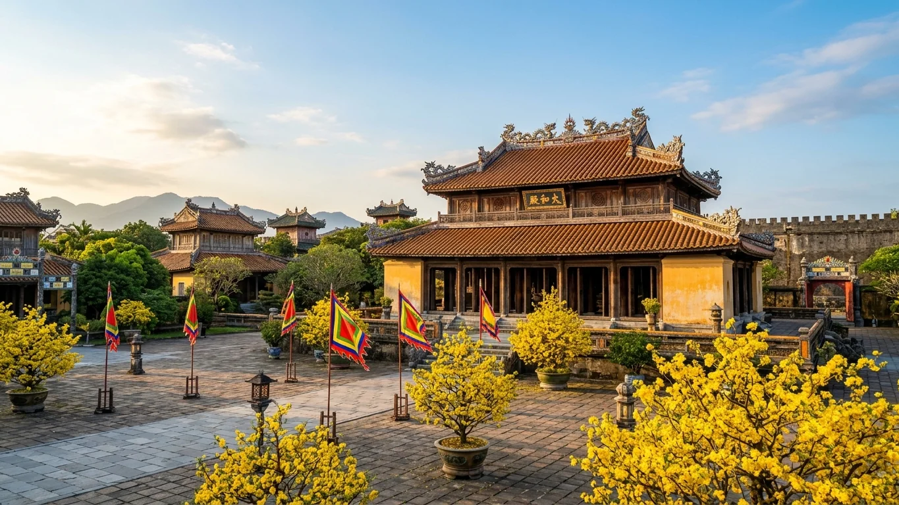
Tháng 1 - 3Mùa Xuân: Sắc Mai Hoàng Cung & Lễ Hội Cố Đô
Thời điểm: Tháng 1 đến hết tháng 3 Dương lịchTiết trời mùa xuân ấm áp, xua tan cái lạnh mùa đông. Đây là mùa các chậu mai vàng trăm tuổi đồng loạt bung nở trong Hoàng thành, không khí lễ hội Festival mùa xuân rộn rã và du khách tha hồ diện tà áo dài cổ phục chụp ảnh kỷ niệm.
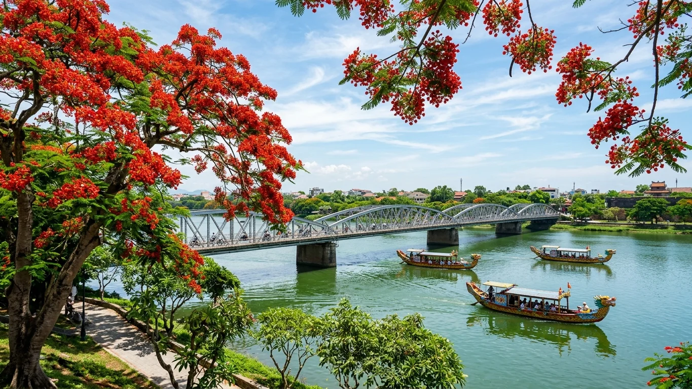
Tháng 4 - 6Mùa Hạ: Rực Rỡ Phượng Vĩ Sông Hương & Sen Hồ Tịnh Tâm
Thời điểm: Tháng 4 đến tháng 6 Dương lịchMùa hoa phượng đỏ nhuộm thắm đôi bờ sông Hương kết hợp sắc sen trắng tinh khiết hồ Tịnh Tâm nở rộ ngát hương. Trời nắng trong xanh rực rỡ, thích hợp cho các hoạt động tắm biển Thuận An, Cảnh Dương và chèo SUP trên sông.
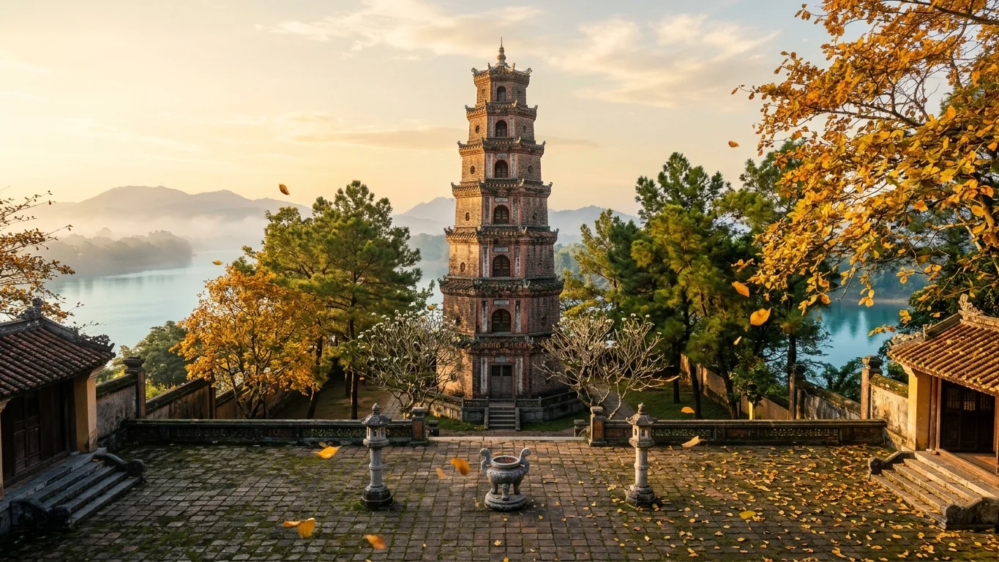
Mùa Thu: Lãng Đãng Khói Sương & Hồn Thu Ngô Đồng
Thời điểm: Tháng 7 đến tháng 9 Dương lịchMùa thu xứ Huế mang vẻ đẹp dịu dàng và lãng mạn nhất trong năm. Nắng thu vàng như rót mật xuyên qua vòm lá các lăng tẩm hoàng gia, mặt nước Hương Giang phẳng lặng như gương soi bến đò xưa.
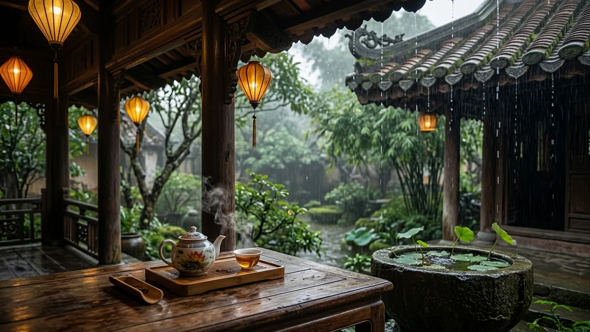
Tháng 10 - 12Mùa Đông: Nét Trầm Tư Mưa Huế & Ấm Nồng Trà Cung Đình
Thời điểm: Tháng 10 đến tháng 12 Dương lịchMưa Huế trở thành một nét di sản thi ca đặc sắc. Ngồi bên hiên nhà cổ ngắm mưa rơi, lắng nghe tiếng nhã nhạc thánh thót và thưởng thức tách trà Cung đình nóng ấm hay bát bún bò cay nồng là trải nghiệm khó quên.
📸 5. Top 10 Thắng cảnh biểu tượng & Dấu tích lịch sử
Chiêm ngưỡng trọn vẹn 10 di tích lịch sử và danh thắng biểu tượng ngoạn mục bậc nhất làm nên hồn cốt Cố đô Huế:
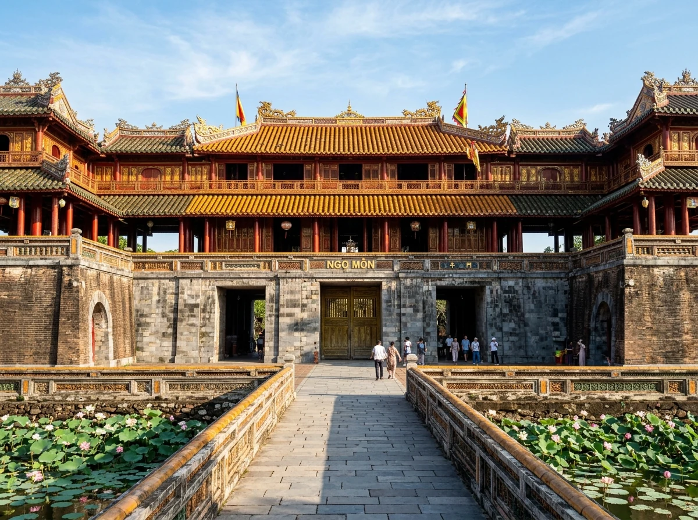
1. Đại Nội Huế — Cửa Ngọ Môn & Tử Cấm Thành
Trung tâm quyền lực tối cao của triều Nguyễn, nơi lưu giữ Điện Thái Hòa, Thế Miếu, Cửu Đỉnh đúc đồng đồ sộ và hàng trăm công trình cung điện vàng son rực rỡ.
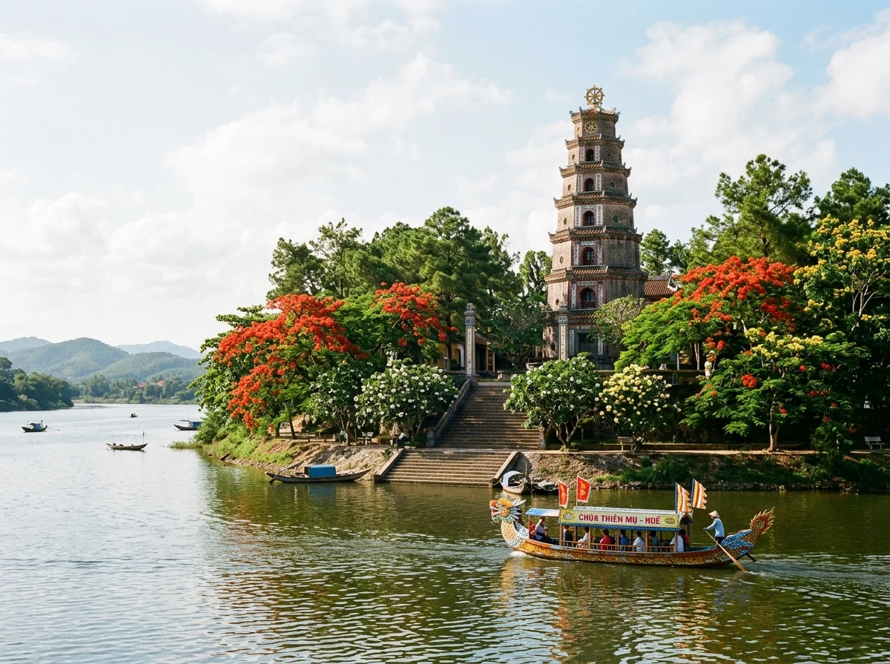
2. Chùa Thiên Mụ — Linh Hồn Xứ Huế
Biểu tượng thiêng liêng của Cố đô với tiếng chuông ngân nga sớm chiều buông xuống làn sương khói Hương Giang.
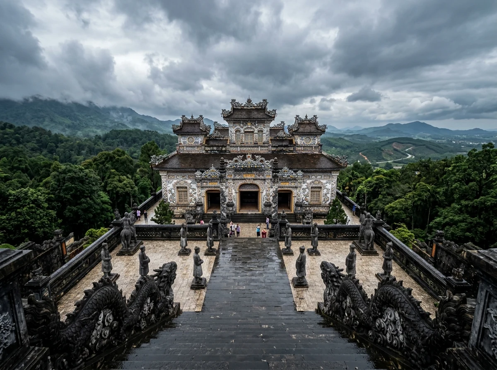
3. Lăng Khải Định — Kiệt Tác Nghệ Thuật
Nội thất cung Thiên Định tráng lệ với bức bích họa "Cửu Long Ẩn Vân" trên trần và pho tượng vua Khải Định đúc đồng mạ vàng uy nghi.
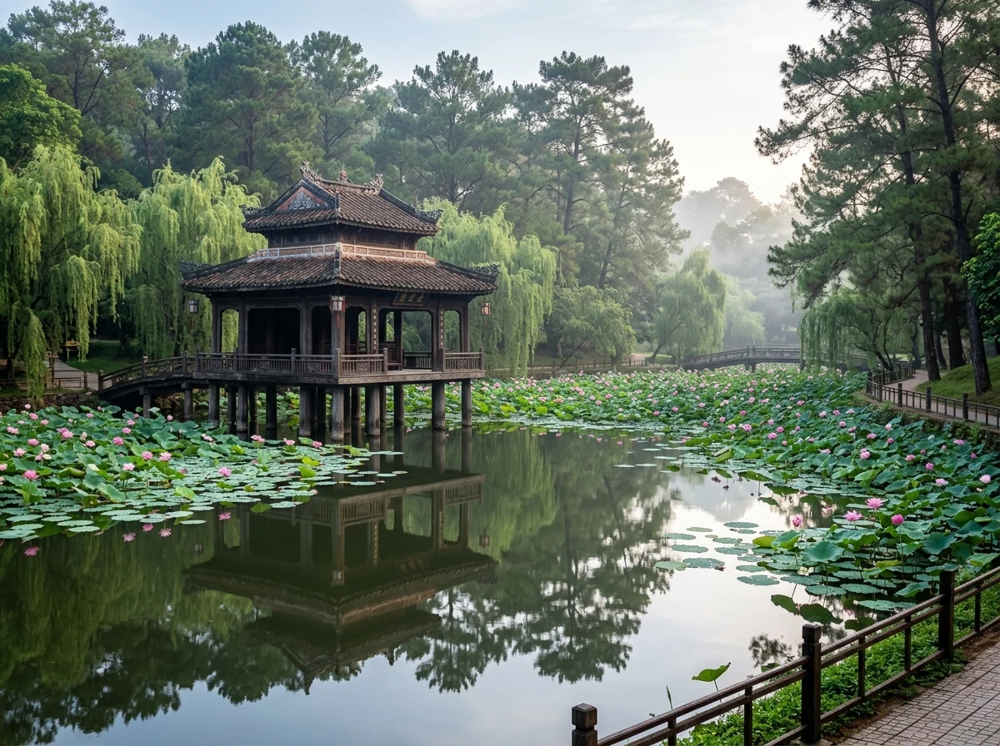
4. Lăng Tự Đức — Nốt Trầm Lãng Tử Chốn Hoàng Gia
Không gian sơn thủy hữu tình mang đậm tâm hồn thi sĩ của vị vua hay chữ nhất triều Nguyễn, phản chiếu vẻ đẹp u hoài thoát tục.
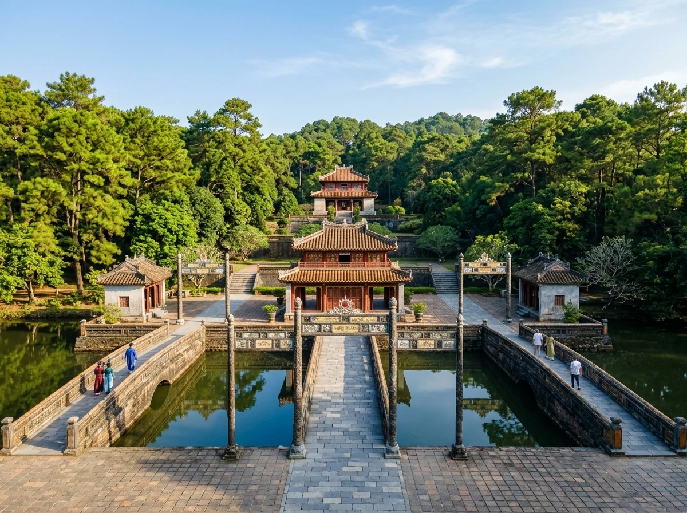
5. Lăng Minh Mạng — Uy Nghiêm Phong Thủy
Sự hòa quyện tuyệt đỉnh giữa kiến trúc cung đình tôn nghiêm và hồ sen Tân Nguyệt hình vầng trăng khuyết ôm lấy Bửu Thành.
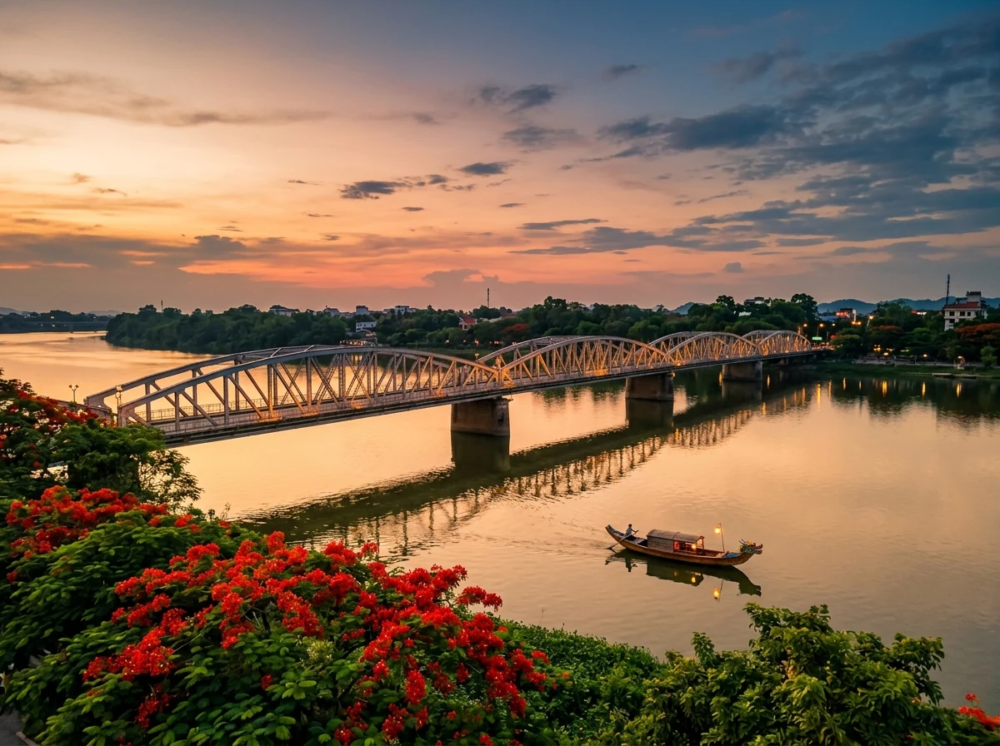
6. Cầu Trường Tiền & Dòng Sông Hương
Chứng nhân lịch sử trăm năm nối đôi bờ sông Hương, lung linh huyền ảo trong ánh đèn đổi màu rực rỡ khi đêm về.
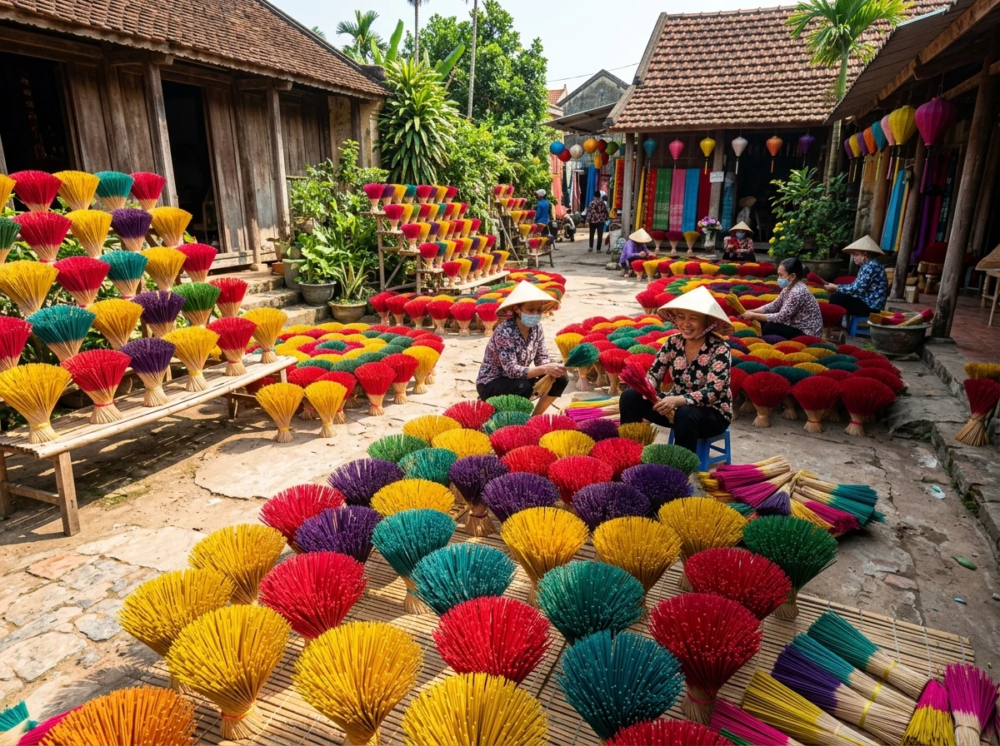
7. Làng Hương Thủy Xuân — Sắc Màu Di Sản
Không gian ngát hương thơm trầm ấm và điểm dừng chân chụp ảnh cổ phục Việt rực rỡ bậc nhất xứ Huế.
8. Phá Tam Giang — Hoàng Hôn Tuyệt Đỉnh
Thưởng thức hải sản đầm phá tươi sống tại đầm Chuồn và trải nghiệm lênh đênh thuyền ngắm chiều tà nhuộm đỏ chân trời.
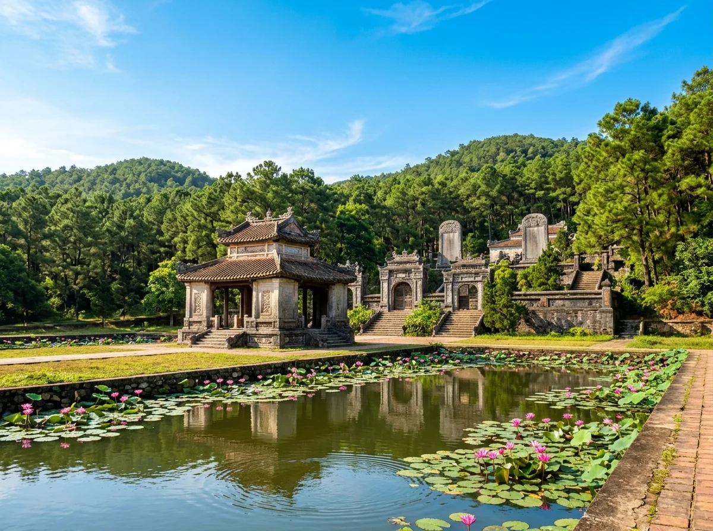
9. Lăng Gia Long — Sơn Thủy Hoang Sơ
Lăng tẩm mang vẻ đẹp nguyên sinh tĩnh mịch tuyệt đối, thể hiện trọn vẹn khí phách khai sơn phá thạch của đấng lập quốc.
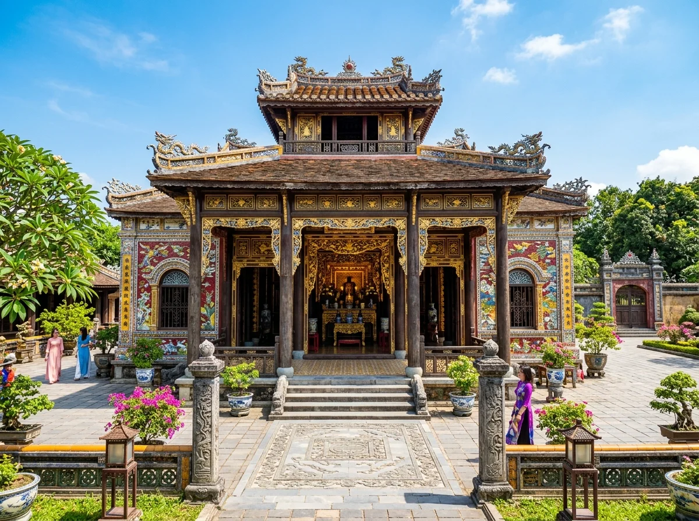
10. Lăng Đồng Khánh — Giao Thoa Mỹ Thuật
Nội thất điện Ngưng Hy được giới chuyên môn đánh giá là bảo tàng nghệ thuật sơn son thếp vàng tinh xảo bậc nhất triều Nguyễn.
🚗 6. Cẩm nang di chuyển & Cung đường giao thông
Nằm ở vị trí trung độ đất nước, Huế có hạ tầng giao thông kết nối toàn diện bằng đường hàng không, đường sắt Bắc Nam và hệ thống đường bộ cao tốc:
| Phương tiện di chuyển | Thời gian hành trình | Mức giá tham khảo | Đặc điểm & Lời khuyên trải nghiệm |
|---|---|---|---|
| Máy bay đến Sân bay Phú Bài (HUI) (Từ Hà Nội / TP.HCM) | 1 giờ 15 phút bay | 850.000 - 1.800.000 đ/vé | Sân bay Phú Bài vừa khánh thành nhà ga T2 hiện đại, cách trung tâm TP Huế khoảng 15km (đi taxi hoặc xe buýt 50k về phố). |
| Tàu hỏa Bắc - Nam (Đoàn tàu Di sản) (Hà Nội, Đà Nẵng -> Huế) | Đà Nẵng -> Huế: 3 giờ; Hà Nội: 13 giờ | 150.000 - 750.000 đ/vé | Đặc biệt tuyến tàu du lịch "Kết nối di sản miền Trung" Huế - Đà Nẵng vượt Đèo Hải Vân ngắm vịnh Lăng Cô đẹp ngoạn mục. |
| Xe khách Limousine / Xe giường nằm (Từ Đà Nẵng, Hội An, Quảng Bình) | 2 giờ - 3.5 giờ | 150.000 - 250.000 đ/vé | Chạy đường cao tốc La Sơn - Túy Loan hoặc Cam Lộ - La Sơn thông thoáng, đưa đón tận các điểm trung tâm. |
| Thuê xe máy tự lái dạo cố đô (Tại trung tâm TP Huế) | Tự do theo ngày | 120.000 - 150.000 đ/ngày | Phương tiện lý tưởng nhất để vi vu các cung đường rợp bóng cây cổ thụ và len lỏi qua các lăng tẩm ngoại ô. |
Trải nghiệm di chuyển đặc trưng tại Huế:
- Thuyền rồng sông Hương & Nghe Ca Huế: Thuê thuyền rồng du ngoạn ngắm hoàng hôn sông Hương, ghé chùa Thiên Mụ hoặc nghe ca Huế thính phòng thả hoa đăng ban đêm (giá vé ghép 100.000 - 150.000 VNĐ/người).
- Dạo xích lô quanh Kinh Thành: Ngồi xích lô thong dong qua các cổng thành cổ, đường hoa phượng, ngắm nhìn nhịp sống thanh bình chậm rãi của người dân địa phương.
- Tuyến xe đạp dạo nhà vườn Kim Long: Đạp xe men theo đường Kim Long rợp bóng mát, ghé thăm các phủ đệ cổ và thưởng thức bánh ướt thịt nướng trứ danh.
🍲 7. Tinh hoa ẩm thực đặc sản
Ẩm thực Huế là đỉnh cao của sự giao hòa giữa ẩm thực Cung đình bác học cầu kỳ và ẩm thực Dân gian phong phú, đậm đà. Nét đặc trưng của món ăn xứ Huế là sự tinh tế trong gia vị, cay nồng ớt hiểm, thơm ngậy mắm ruốc nhưng vẫn giữ trọn sự thanh tao hài hòa:
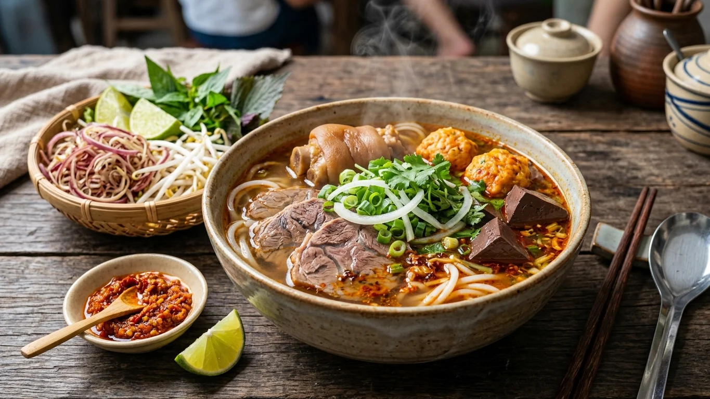
1. Bún Bò Huế Chuẩn Vị Cố Đô
Món ăn trứ danh đã vượt tầm quốc gia để trở thành một trong những món súp ngon nhất thế giới. Nước dùng ninh từ xương bò hầm kỹ quyện vị cay nồng của ớt sa tế, vị thanh mát của hoa chuối thái sợi và chút chanh tươi làm bừng tỉnh vị giác.
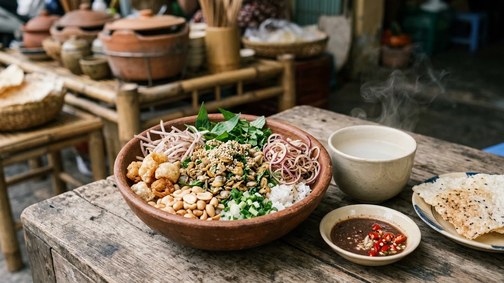
2. Cơm Hến & Bún Hến Cồn Hến
Hến đãi từ cồn cát phù sa Cồn Hến giữa dòng sông Hương có vị ngọt đậm đặc trưng. Món ăn hội tụ đủ ngũ vị: cay, chua, mặn, ngọt, bùi, vừa ăn vừa xuýt xoa toát mồ hôi giữa cái nắng gió miền Trung.
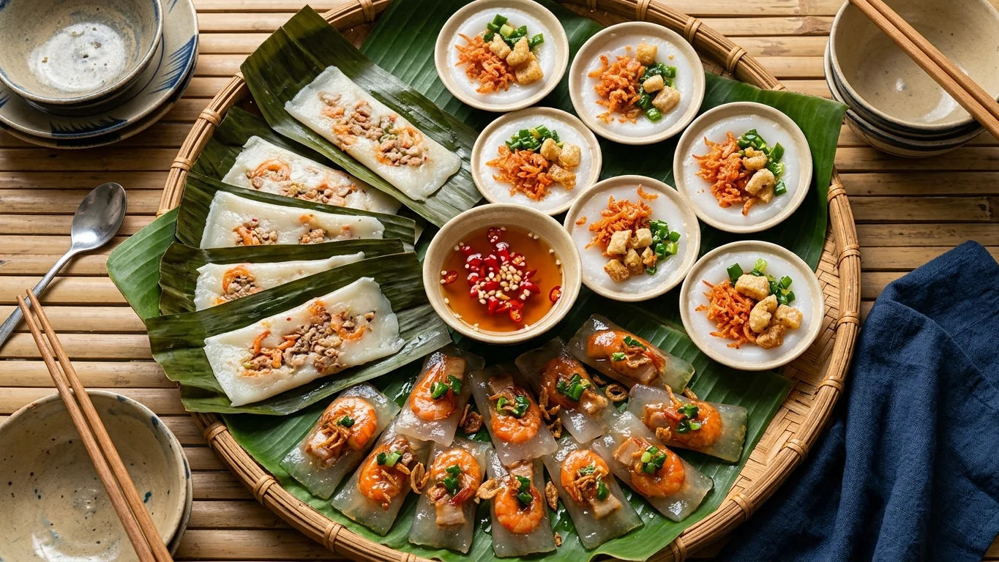
3. Khay Bánh Bèo, Nậm, Bột Lọc
Những chiếc bánh nhỏ nhắn xinh xắn mang cốt cách quý phái kinh kỳ. Chan thìa nước mắm ớt xanh ngọt nhẹ vào chén bánh bèo, cảm nhận độ dẻo dai bùi ngậy của bột gạo hòa quyện cùng vị ngọt béo của tôm thịt.
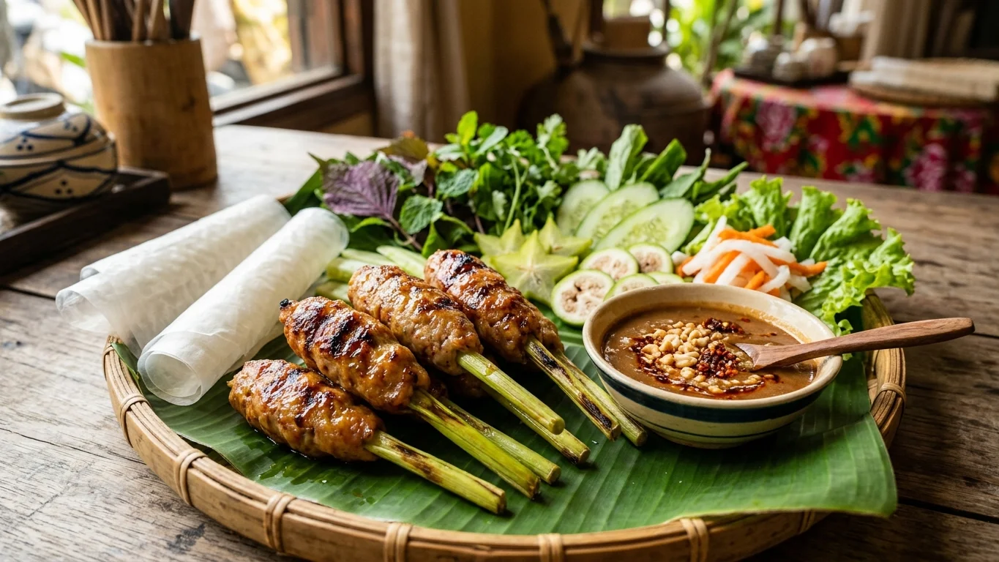
4. Nem Lụi Nướng Sả Than Hoa
Bí quyết làm nên tên tuổi món nem lụi Huế nằm ở bát nước lèo gia truyền nấu từ gan heo, thịt nạc xay, tương đậu nành và mè rang xay nhuyễn sánh đặc, mang hương vị thơm ngon béo ngậy khó cưỡng.
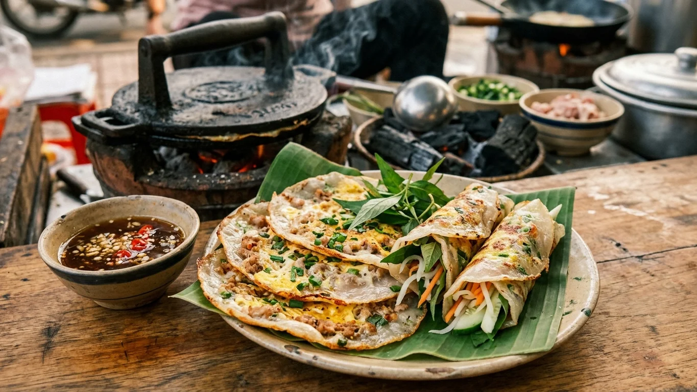
5. Bánh Ép Thuận An Dẻo Giòn
Món ăn vặt bình dị nhưng cực kỳ gây nghiện xuất xứ từ vùng biển Thuận An. Miếng bánh dẻo thơm mùi trứng, ngậy vị mỡ hành và chua cay mặn ngọt của đồ chua tạo nên phong vị đường phố rất riêng của tuổi trẻ xứ Huế.
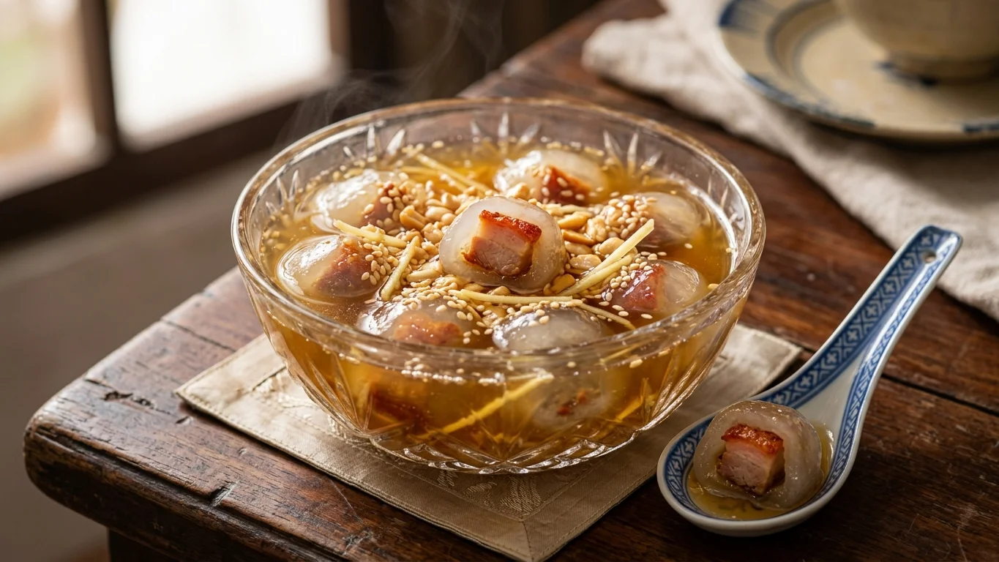
6. Chè Bột Lọc Bọc Heo Quay
Món chè độc nhất vô nhị chỉ có ở xứ Huế. Vị ngọt thanh của nước đường phèn, vị cay ấm của gừng tươi hòa quyện cùng vị mặn béo ngậy giòn sần sật của miếng heo quay tạo nên sự bùng nổ vị giác đầy bất ngờ.
🎟️ 8. Bảng giá vé tham quan & Dịch vụ di tích niêm yết
Biểu giá vé tham quan niêm yết chính thức áp dụng tại Quần thể di tích Cố đô Huế do Trung tâm Bảo tồn Di tích Cố đô Huế quản lý (Cập nhật năm 2026):
| Khu Di Tích / Điểm Tham Quan | Vé Người Lớn | Vé Trẻ Em (7 - 12 tuổi) | Quyền Lợi & Gợi Ý Tiết Kiệm |
|---|---|---|---|
| Đại Nội Huế (Hoàng Thành & Tử Cấm Thành) | 200.000 đ/lượt | 40.000 đ/lượt | Bao gồm tham quan Ngọ Môn, Điện Thái Hòa, Thế Miếu, Cung Diên Thọ, Bảo tàng Cổ vật Cung đình Huế. |
| Lăng Hoàng Đế Khải Định (Ứng Lăng) | 150.000 đ/lượt | 30.000 đ/lượt | Chiêm ngưỡng toàn bộ kiến trúc khảm sành sứ cung Thiên Định và tượng đồng vua Khải Định. |
| Lăng Hoàng Đế Tự Đức (Khiêm Lăng) | 150.000 đ/lượt | 30.000 đ/lượt | Tham quan hồ Lưu Khiêm, Xung Khiêm Tạ, Khiêm Cung và khu lăng mộ giữa rừng thông. |
| Lăng Hoàng Đế Minh Mạng (Hiếu Lăng) | 150.000 đ/lượt | 30.000 đ/lượt | Tham quan trục thần đạo 700m, hồ Tân Nguyệt, Bửu Thành và các cung đình phong thủy. |
| Tuyến Vé Tuyến 4 Điểm (Đại Nội + 3 Lăng) | 530.000 đ/tuyến | 100.000 đ/tuyến | Tiết kiệm 120.000 đ! Vé có giá trị sử dụng trong vòng 02 ngày liên tiếp tại 4 điểm lớn. |
| Lăng Gia Long / Lăng Đồng Khánh / Thiệu Trị | 50.000 đ/lượt | Miễn phí trẻ em | Vé áp dụng lẻ cho từng lăng tẩm hoàng gia còn lại. |
| Chùa Thiên Mụ & Cầu Trường Tiền | Miễn phí vào cổng | Miễn phí | Tự do vãn cảnh chùa, chiêm bái tháp Phước Duyên và ngắm hoàng hôn sông Hương. |
| Vé Nghe Ca Huế Trên Sông Hương (Thuyền Rồng) | 100.000 - 150.000 đ | 50.000 đ | Chương trình ca Huế thính phòng 60 phút và trải nghiệm thả hoa đăng cầu an trên sông. |
🧭 9. Gợi ý lịch trình & Mẹo trải nghiệm bản địa an toàn
Để tận hưởng nhịp sống chậm rãi, thong dong đúng điệu xứ kinh kỳ và khám phá trọn vẹn các di sản hoàng gia, GO FAR đề xuất lịch trình trải nghiệm tối ưu 3 Ngày 2 Đêm:
Lịch trình gợi ý 3N2Đ: "Hồn Xưa Hoàng Triều & Nét Huế Trầm Tư"
Ngày 1: Đón Chào Cố Đô — Hoàng Thành Đại Nội — Hoàng Hôn Chùa Thiên Mụ — Ca Huế Sông Hương
- 08h30: Đáp chuyến bay xuống Sân bay Phú Bài hoặc tàu hỏa đến Ga Huế, nhận phòng khách sạn trung tâm.
- 09h30: Thưởng thức bữa sáng bún bò Huế thơm lừng mùi mắm ruốc tại quán mụ Rơi hoặc bà Tuyết.
- 10h30: Thuê cổ phục áo dài Nhật Bình hoặc Ngũ Thân, bước qua cửa Ngọ Môn khám phá Đại Nội Huế.
- 12h30: Ăn trưa cơm niêu xứ Huế hoặc ẩm thực chay thanh tịnh.
- 15h30: Dạo bước viếng Chùa Thiên Mụ ngắm hoàng hôn buông xuống dòng sông Hương êm ả.
- 18h30: Ăn tối mâm bánh bèo, nậm, lọc và bánh khoái giòn rụm.
- 20h00: Lên thuyền rồng nghe Ca Huế thính phòng truyền thống, thả hoa đăng lung linh trên dòng Hương Giang.
Ngày 2: Lăng Tự Đức Thi Ca — Làng Hương Thủy Xuân — Tuyệt Tác Lăng Khải Định — Phá Tam Giang
- 08h00: Khám phá vẻ đẹp lãng mạn thoát tục của Khiêm Lăng (Lăng Tự Đức) giữa rừng thông reo.
- 10h30: Dừng chân check-in Làng hương Thủy Xuân rực rỡ sắc màu, tự tay trải nghiệm se que hương trầm.
- 12h30: Ăn trưa nem lụi nướng sả và bánh ép Thuận An giòn thơm.
- 14h00: Chiêm ngưỡng tuyệt tác khảm sành sứ Ứng Lăng (Lăng Khải Định) trên sườn núi Châu Chữ.
- 16h00: Xuôi về Phá Tam Giang ngắm hoàng hôn tím huyền ảo đầm Chuồn, thưởng thức hải sản đầm phá tươi rói.
- 20h00: Trở về trung tâm dạo cầu gỗ lim sông Hương, nhâm nhi ly chè bột lọc bọc heo quay độc đáo.
Ngày 3: Uy Nghiêm Lăng Minh Mạng — Chợ Đông Ba — Mua Quà Đặc Sản — Tạm Biệt Huế
- 08h00: Thăm Lăng Minh Mạng uy nghiêm giữa hồ sen Tân Nguyệt và rừng cây cổ thụ ngút ngàn.
- 10h30: Khám phá Chợ Đông Ba sầm uất, mua sắm đặc sản: mè xửng giòn dẻo, nón bài thơ, tôm chua Trọng Tín, trà cung đình.
- 12h30: Ăn trưa tô cơm hến cay xé lưỡi tại Cồn Hến.
- 14h30: Thư thả thưởng thức cà phê muối Huế trứ danh ven bờ sông An Cựu trước khi ra sân bay/nhà ga trở về nhà.
Mẹo an toàn & Văn hóa ứng xử khi du lịch Huế:
- Trang phục trang nghiêm nơi đền đài: Khi tham quan Đại Nội (khu Thế Miếu, Điện Thái Hòa), chùa Thiên Mụ và các lăng tẩm vua, cần mặc trang phục lịch sự, áo có tay và quần/váy dài qua đầu gối để tôn trọng chốn thờ tự linh thiêng.
- Ăn cay có chừng mực: Ớt Huế rất cay nồng, nếu bạn không quen ăn cay hãy dặn chủ quán trước "ít ớt" hoặc "không ớt sa tế" khi gọi bún bò, cơm hến, bánh ép.
- Tránh mùa mưa bão lớn: Tháng 10 và tháng 11 là cao điểm mưa dầm và lũ lụt tại miền Trung, hãy theo dõi sát dự báo thời tiết trước khi lên kế hoạch. Mùa đẹp nhất là từ tháng 1 đến tháng 8.
- Hỏi giá trước khi mua sắm tại chợ: Tại Chợ Đông Ba, du khách nên hỏi giá và mặc cả lịch sự nhẹ nhàng khi mua quần áo, đồ lưu niệm để có mức giá hợp lý nhất.